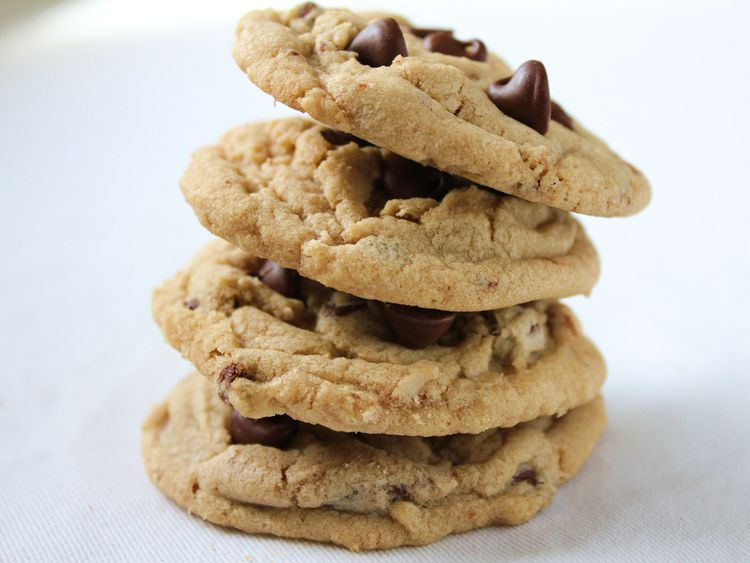

Home
Chocolate Chip Cookies

Description
Chocolate chip cookies are golden, chewy or crisp treats filled with melted pockets of chocolate. Fresh from the oven, they’re warm, rich, and comforting with a perfect balance of sweet and buttery flavor.
Ingredients
- All-purpose flour
- Baking soda
- Salt
- Butter (softened)
- Brown sugar
- White sugar
- Eggs
- Vanilla extract
- Chocolate chips
Steps
- Cream together butter, brown sugar, and white sugar until light and fluffy.
- Mix in eggs and vanilla.
- In another bowl, combine flour, baking soda, and salt, then gradually add to the wet mixture.
- Stir in chocolate chips.
- Scoop dough onto a baking sheet and bake at 350°F (175°C) for 10–12 minutes until edges are golden.
- Let cool slightly before serving.